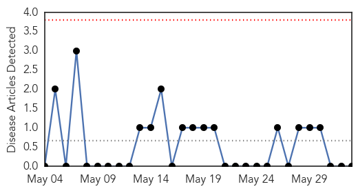

Influenza
30-Day Web Trend
0 alerts, 0 warnings
30-Day Twitter Trend
4 alerts, 0 warnings

Article Locations

Article Confidences

Top Articles:
- 0.996
- Breaking National News and Australian News
- 0.995
- U-M experts can address MERS outbreak in South Korea
- 0.957
- No reports of dog flu yet in Tennessee
- 0.751
- June 2, 2015 Archives
- 0.751
- June 1, 2015 Archives
- 0.751
- June 1, 2015 Archives
- 0.751
- June 1, 2015 Archives
- 0.751
- June 1, 2015 Archives
- 0.686
- Ohio cancels all bird-related exhibits due to flu scare
- 0.588
- Vaccines & Viruses: Leukemia vaccine claims might be overhyped
Top Tweets:
- 0.720
- RT: Stop the spread of influenza H1N1 http://t.co/5L752f0aKM
- 0.528
- HK: Cluster of Influenza A cases in Shatin Hospital http://t.co/ryF1y4ZLBS
- 0.503
- RT: Flu cases double in SA as the elderly face an early spike influenza vaccines http://t.co/L6FxPwLnyP
Mold/Fungal
30-Day Web Trend
0 alerts, 0 warnings

30-Day Twitter Trend
0 alerts, 0 warnings

Article Locations

Article Confidences

Top Articles:
-
No articles found for Jun 02, 2015
Top Tweets:
-
No tweets found for Jun 02, 2015